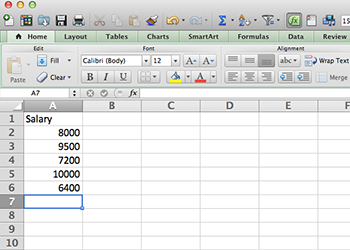
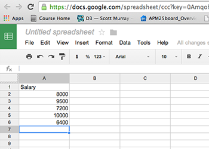
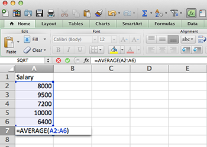
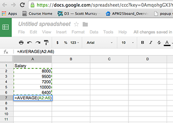
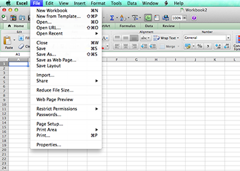
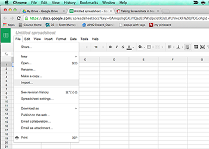
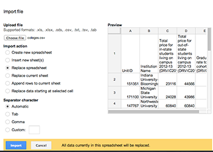
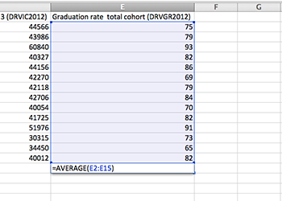
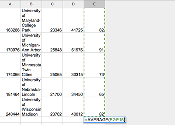

Chapter 3 Mean
Here’s the thing about mean – you probably already get it. It’s the average. It’s a measure of the middle. You’ve used averages your whole life. They’re everywhere.
But you may not know that average is just one measure of the middle – what mathematicians call measures of central tendency. The others are the median (more on that later) and mode (which no one except mathematicians ever talks about).
Knowing when to use average and when to use median takes a little bit of thinking. Why? Because averages, by how they are calculated, are sensitive to extremes. What does this mean? Let’s use an example.
Let’s pretend for a second that I’m taking a poll of a college class of 5 students on how much everyone makes per year. It’s full of students, so the annual salaries are $8,000, $9,500, $7,200, $10,000 and $6,400. That makes the average annual income of these five students $8,220 (we’ll talk about how to calculate the average in the next section). In our group of five students, given their incomes, $8,220 is pretty much in the middle. A student might make a little more, or a little less, but $8,220 is in the ballpark.
But I teach at the University of Nebraska. And we love us some football. And surprise! Head Coach Scott Frost visits class. He makes $5 million. Per year.
The average salary now? $874,433. Who feels average now?
(This problem gets solved in a later section)
The above example, while a little silly, illustrates the point: Averages are sensitive to extremes. If you have a set of numbers that has no constraints – there could be really big numbers or really small numbers in the mix – then a mean probably isn’t the number you’re looking for. But when the numbers are constrained, or there aren’t any extreme values in the set, averages work great.
3.1 How to calculate a mean
How to calculate a mean is pretty simple: Take your numbers, add them up, and then divide them by the number of numbers you have. Let’s take our previous example of the class of five and work through it step by step.
First, we need to add up the salaries in the class.
8000 + 9500 + 7200 + 10000 + 6400 = 41100
Then, we divide that 41100 by 5, the number of students in the class.
41100 / 5 = 8220
Calculating the mean of a set of numbers is a very basic and simple way to measure the middle of the group. But be careful with sets of numbers
3.2 How to calculate a mean in a spreadsheet
The great part about spreadsheets is that they remove a lot of the drudgery that doing math by hand involves. Spreadsheets are smart enough to know how to do certain kinds of calculations given a set of numbers, so all you have to do is tell the spreadsheet you want to do that.
Lets do that with an average. So open your spreadsheet of choice and lets type in the salaries of our mythical class.
| In Excel | In Google Spreadsheets |
|---|---|
|  |  |
In a spreadsheet, you can do the math yourself. You could, in A7, type =(8000+9500+7200+10000+6400)/5 which would give you the average.
But why do that?
Typing is the devil. It’s the devil because it’s tedious. It’s the devil because it’s error prone. If I switch two numbers or type 5 instead of 6, I’m wrong. Once you have data, the less typing you do, the better.
In a spreadsheet, to calculate something with a set of numbers, you’ll use something called a function. A function has a name, and takes inputs. If you’re getting itchy, relax. Let’s use the AVERAGE function in our spreadsheet of choice to illustrate this.
So first, remember that formulas is a spreadsheet start with an equal sign.
The second thing you need to know is that you have to tell your spreadsheet where all your numbers are. You can do this one of two ways. First, you could name them all individually (A2, A3, A4, A5, A6) but that puts us back into typing-is-the-devil territory. And, what if you have a thousand numbers? That would be awful. So there’s a second way – use a colon. To tell your spreadsheet that you want a range of numbers, you tell it the starting number, colon, ending number. So, in our case, our range will look like A2:A6.
The third is that you call a function – you tell your spreadsheet you want to use this particular function – by putting the name of it first, then your inputs in parentheses. Like this: =FUNCTION(inputs)
So putting that all together, the format for the AVERAGE function is =AVERAGE(A2:A6)
| In Excel | In Google Spreadsheets |
|---|---|
|  |  |
And, when we hit enter, we get our answer: $8,220.
3.3 How to turn a mean into a story
One of the main uses for an average is to compare how something fares against the middle. Is it above average or below average? And how much?
One thing you might want to do is compare your university’s graduation rate compared to other schools like yours. For this example, I’ve provided a CSV file of schools in the Big 10 athletic conference that you should download (math alert: has 14 schools in it). If you’d like to get your own athletic conference, this data comes from the US federal Department of Educations IPEDS database.
Question: What is the average graduation rate among Big 10 schools?
Opening the file in Excel is easy – go to File > Open and find where you put the file. Open it and it’ll come up as a new workbook.
In Google Spreadsheets, it’s also easy, but not quite as straightforward. In Google Spreadsheets, open up a new spreadsheet, go to File > Import. There, you’ll get a new screen. First, click Choose File and find the data file called colleges.csv in the data folder that came with this tutorial. Click replace spreadsheet (which means the blank sheet you opened up will be replaced with actual data) and then hit import.
| In Excel | In Google Spreadsheets |
|---|---|
|  |  |
|  |
Pro Tip
See how the data you just imported is cut off by the widths of the columns? Annoying, right? Here’s how to fix that. See the rectangle to the left of column A and above row 1? Click it. That selects everything. Now, hover your mouse over the line between column A and B. See how it changed to something else? Double click that line. Boom. Automatically re-sizes every column to what’s needed to show all the data. Much better now.
So you can see now we have five columns of data. A unit ID, the name of the institution, the cost of 30 credit hours – or one academic year – for in state students, that same cost for out-of-state students and the graduation rate of what’s called the six-year cohort. That six-year cohort is the percent of students who had graduated who started six years before. That’s the metric most universities look at to compare each other.
So, from our last example, we know we can go to row 16 column E and work our AVERAGE magic.
Google spreadsheet users: You’ll need to add a row to work with. There’s a button at the bottom to just add 20 rows. That will work nicely.
| In Excel | In Google Spreadsheets |
|---|---|
|  |  |
And when we hit enter, we see that the Big 10 graduates 79.3 percent of students in six years. By eyeballing it, we can see some schools, like Northwestern, graduate nearly all of their students in six years. And, on the opposite end of the spectrum, we see the University of Nebraska-Lincoln, my employer, graduating only 65 percent of students in six years.
Uh oh.
So the first question that jumps out at you should be a very simple one: Why?
Congratulations. You got your first story idea from data. But is eyeballing it the best way to look at this? Nope.